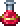
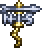

The Deerclops is a large, upright, one eyed deer with 7,000 / 11,900 / 15,172 health. It is summoned by using a Deer Thing at any time while in the Snow biome. The Deerclops has four attacks: If it is close to the player, the Deerclops will smash the ground, summoning a wave of ice spikes that quickly travels torwards them. Every third consecutive wave does not go as far, but spreads in both directions. If it is not close enough to its target to use its ice spikes attack, the Deerclops will 'scoop' and then throw numerous chunks of debris into the air that fall back down. These ice chunks can pass through blocks. The Deerclops will occasionally stand in place and roar, inflicting the Slow Debuff on all players for 12 seconds / 24 seconds / 30 seconds. If the player is above the Deerclops for too long, it will summon five shadow hands around the player. The Deerclops can pass through solid blocks, but will quickly rise to the top of said blocks unless the player is below it. If the player is more than 30 tiles away from it, the Deerclops will turn a dark shade purple and become immune to damage. If the Deerclops is significantly offscreen, it will wander back and forth without directly seeking the player. In Expert Mode, shadow hands will be periodically summoned that either move forwards slowly, move forwards quickly and curve, or spin in place. Shadow hands are summoned more frequently as the Deerclops' life


HP:7000
DAMAGE:10/26/36/20
AI: runs around
Healing Potion
Eye_Bone
Eyebrella
Radio Thing
 Pew-matic Horn
Pew-matic Horn
Weather_Pain
Houndius Shootius
 Lucy the Axe
Lucy the Axe